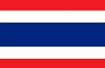

국기
- 종교 | 불교, 이슬람, 기독교
- 화폐 | 태국 밧(THB, ฿)
- 언어 | 타이어
- 정치 | 입헌군주제, 의원내각제, 다당제, 양원제, 군사독재
- 인구수 | 7007만
역사
중국 남부로부터 점차적으로 인도차이나반도로 이동한 타이족은
짜오프라야강을 기반으로 13세기에 수코타이 왕조(1238-1438)를 세우고, 14세기에 아유타야 왕조(1350-1767)를 세웠다.
아유타야를 수도로 하여 주변국들과 활발한 해외 무역을 벌였던 아유타야 왕국은 1767년 미얀마(버마)의 침략으로 멸망하였다.
1932년 무혈 쿠데타를 통해 태국의 정치 체제는 절대군주제에서 입헌군주제로 바뀌었다.
태국은 민주주의 국가를 표방하지만 크고 작은 쿠데타가 이어진 긴 군부 통치와 짧은 문민 통치가 현대사에서 지속되며 권위주의적이고 불안정한 정치를 경험하고 있다.
#푸켓
- 특징 |
- 기후 |
- 음식 |
동남아에서 유명한 관광지다.
그 만큼 사람들도 많고 호객, 사기도 빈번하므로 조심하는 것이 좋다.
일년 내내 더운 날씨가 이어진다.
연중 최고 기온은 35℃ 정도고, 최저 기온은 25℃ 정도다.
우기에 해당하는 5~10월에는 스콜 현상이 이어지는데, 다른 지역에 비해 강수량이 높은 편이다
지리적 특성상 해산물 요리를 취급하는 음식점이 많다.
일년 내내 여행객이 끊이지 않는 유명 관광지답게 세계 여러 나라의 음식을 맛볼 수 있다.
- 관광 |
- 교통 |
채식주의자 축제, 푸껫 킹스컵 레카타, 송크란, 러이끄라통 등 푸껫에서는 해마다 다양한 축제가 열린다.
그중 매년 음력 9월에 열리는 채식주의자 축제가 가장 유명하다.
축제 기간 푸껫 시내는 많은 사람들로 북적이며, 주요 행사 중 하나인 이색 묘기는 세계적으로 이슈가 된다.
대중교통은 요금이 비싼 편이고 바가지요금도 심하다.
미터 택시는 푸켓 타운이나 공항과 유명 해변 정도에서만 이용할 수 있다.
툭툭은 미니 트럭을 개조해 소형 밴과 비슷하다.
#방콕
- 특징 |
- 기후 |
태국 제1의 도시로 최대도시이며 싱가포르와 함께 동남아시아의 거점 도시이자 인도차이나 반도의 중심 도시 역할도 수행하고 있다.
사바나 기후에 속하며, 건기와 우기가 뚜렷이 구분된다.
건기와 우기로 나뉘어진 지역이며, 건기는 비가 내리지 않은 대신에 기온이 높고,
우기는 비가 짧고 강하게 내리는 대신에 기온이 훨씬 낮다.
- 관광 |
- 교통 |
방콕 왕궁
왓 포
짜뚜짝 주말시장
카오산 로드
왓 아룬
에메랄드 사원
롬피니 공원
터미널 21 야속
방콕 국립 박물관
출퇴근시간대에 택시 이용은 피하고 전철을 타는 게 좋다. 지상철인 BTS, 지하철인 MRT, 공항철도로 나뉘어져 있다.
태국 여행 기록 구경하기

2022.4.12
2022.4.12
2022.4.12
2022.4.12
2022.4.12
2022.4.12
2022.4.12
2022.4.12
태국 여행 팁
유리심장

가이드 설명을 들으면서 여행하면 더욱 재미있는 여행이 될 수 있어요. 특히 박물관은 가이드 필수!
가영이 여행가영
로마 여행갈 때는 꼭 편한 운동화 준비하세요!
가영이 여행가영
피사의 사탑 근처에는 사람이 많은데, 소매치기도 많은 지역이니 조심 또 조심하세요~!
소리가 들리는 곳으로
베니스는 딱 하루면 적당한 것 같고, 작은 섬들이기 때문에 빡시게 돌아 다니지 마시고,
젤라또 먹고 커피 마시고 하면서~ 천천히 여행하시는거 추천드려요!
유리심장
가이드 설명을 들으면서 여행하면 더욱 재미있는 여행이 될 수 있어요. 특히 박물관은 가이드 필수!